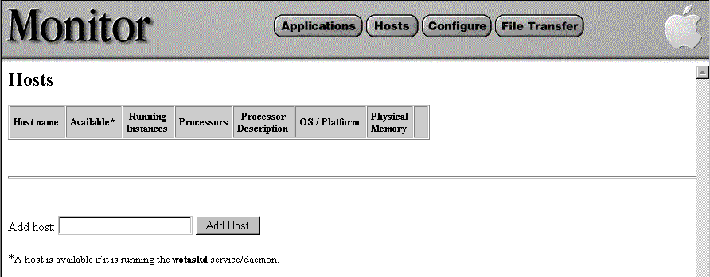
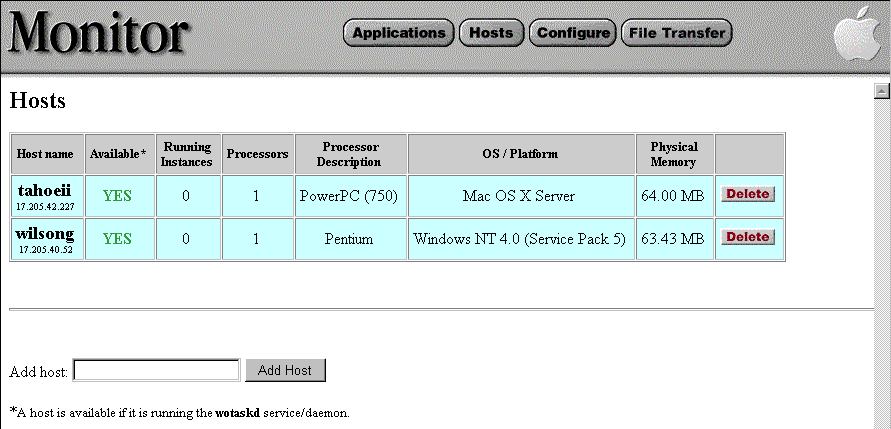

PATH
Documentation > WebObjects 4.5 >
Deploying WebObjects Applications
Adding a Host to Monitor
Before you can configure WebObjects applications on a remote machine, you should let the Monitor application know about the remote machine. To do this, complete the following steps:
-
Click the Hosts button in the Monitor banner. The following page is displayed:

-
Enter the name of a host in the "Add host" field. It must be a valid host name assigned to an IP address (that is, it must have a DNS entry, and must be running
wotaskd
).
-
Click Add Host.
After adding two hosts, Monitor will look something like this:

© 1999 Apple Computer, Inc. – (Last Updated 25 August 99)